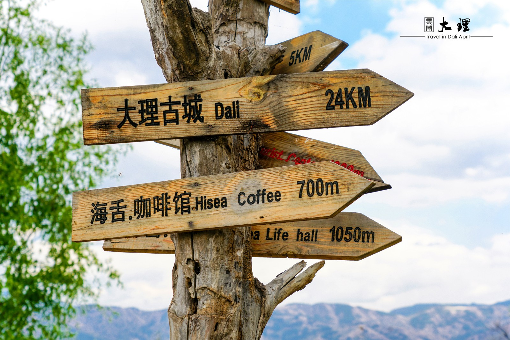
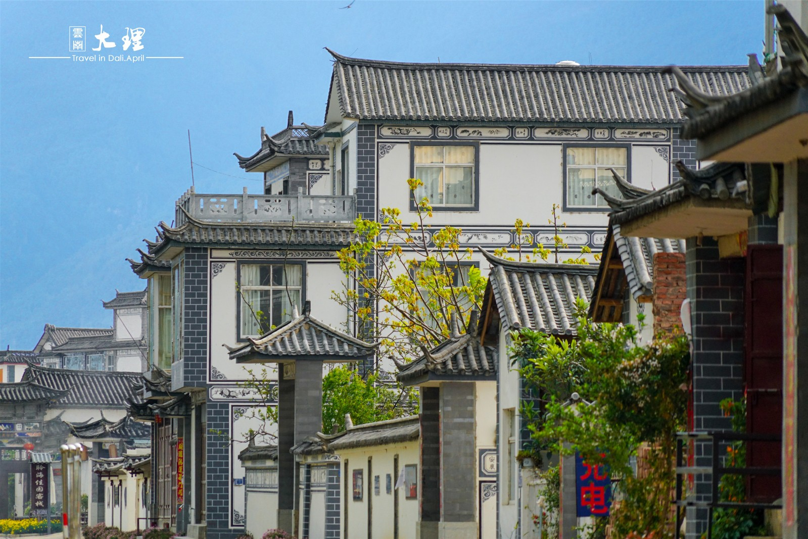
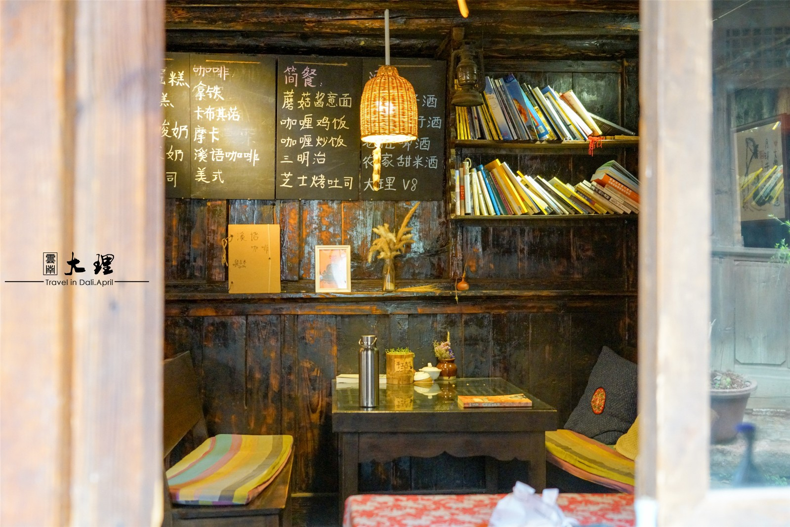
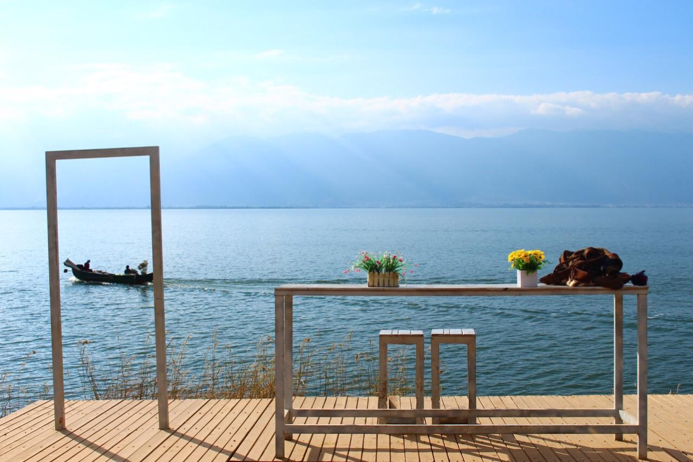
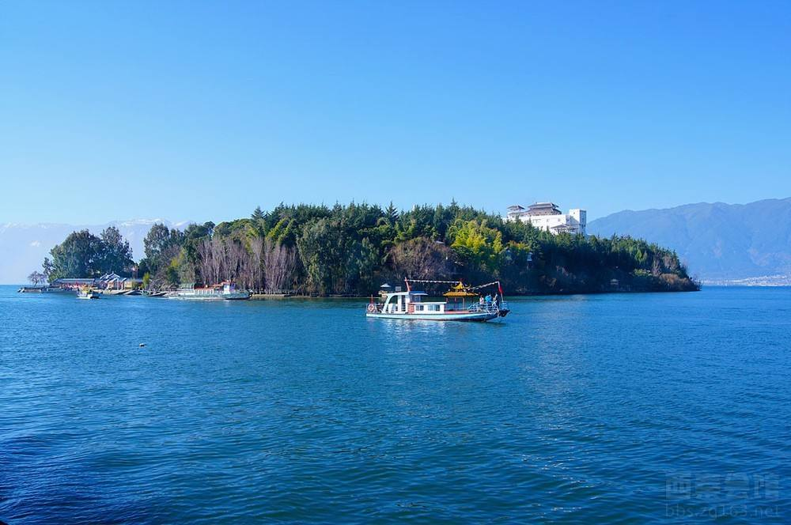

大理古城
“文献名邦”之都，南诏国都城--大理古城，又名叶榆城、紫禁城、中和镇。古城其历史可追溯至唐天宝年间，南诏王阁逻凤筑的羊苴咩城(今城之西三塔附近)，为其新都。现在的古城外有条护城河，古城四周有城墙，东、西、南、北各设一门，均有城楼，四角还有角楼。



云南洱海
洱海水质优良，水产资源丰富，同时也是一个有着迤逦风光的风景区。洱海，虽然称之为海，但其实是一个湖泊，据说是因为白族人民没有见过海，为表示对海的向往，所以称之为洱海。

洱海风光
海上烟波无际，奇幻迷离。水上银帆点点，那略显青蓝的海水微微泛起一点点小小的浪花，湖光山色，美不胜收！它就像一块蔚蓝的宝石镶嵌在点苍山麓旁。
温柔洱海
洱海风景优美，景色宜人，如同一位亭亭玉立的仙女。早晨，明媚的阳光撒在清澈的洱海上，使蔚蓝的海水变得波光粼粼，像撒满金子一样，闪烁着星星点点的光斑。
